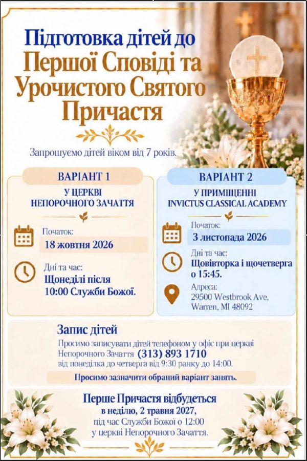

«Пустіть дітей приходити до Мене, не бороніть їм
«Пустіть дітей приходити до Мене, не бороніть їм!» (Мр. 10:14). Ці слова нагадують нам, наскільки дорогими є діти для Господа. Він чекає на кожного з них із любов’ю, приймає їх
Переглянути оголошення →View announcement →